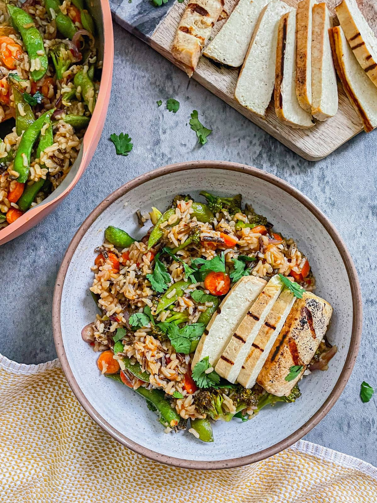

Teriyaki Power Bowl

This high-protein wild rice power bowl will blow you away and keep you full for hours! Packed with nutritious veggies, mixed with wild rice, tossed in a flavorful teriyaki sauce. Perfect dinner meal for any night!
Ingredients:
- wild rice
- firm tofu
- red onion
- brocolli
- carrots
- snap peas
- teriyaki sauce
- coconut aminos
- rice vinegar
- sesame oil
Instructions:
- tart off by measuring out 1 cup of rice. Rinse your rice at least 2-3 times with cold water. Then add to your Instant Pot along with 2 1/4 cups of water. Give it a quick stir and then close the lid. Ensure the steam valve knob is turned to ‘Sealing’. Set your Instant Pot to ‘High Pressure’ cook for 10 minutes.
Once the timer goes off, hit ‘Cancel’, and then set to ‘Keep Warm’ for 15 minutes. Then, carefully turn the steam valve knob to ‘Venting’ either using a spatula or towel. This will slowly release any extra built-up pressure. Wait until the metal piece drops back down.
Then, carefully open the lid. Use a fork to fluff up your rice.
- Prep all your veggies. I thinly sliced my onion, cut the broccoli into florets, sliced my baby carrots, and used frozen snap peas.
In your large pan, add in about 1 tbsp of avocado oil and 1 tbsp of sesame oil. Set to low to medium heat. Once the pan is hot, add in all of your veggies and sauté for 5-6 minutes.
Meanwhile, you can cook your tofu or prep your teriyaki dressing sauce. I typically just leave it on low heat while I work on other things and stir it every few minutes.
- If you’re using super-firm high-protein tofu, you won’t need to press out as much water. I honestly skipped this step as it was necessary. But if you’re not, be sure to press your tofu in between two heavy plates or pans, wrapped in paper towels to drain out excess water.
Drain out any excess water from the packaging and cut your block into halves. It comes in a package of 16oz and for this recipe, I used roughly half. Cut into two large blocks.
If you have a grill, you can use that, or a grill cast iron (or a regular pan). In my grill cast iron, I added in about 1/2 tbsp of avocado oil. Make sure to have it on low heat. Avocado oil has a high smoke point so you want to ensure your house doesn’t fill up with smoke. I have my vent going on high as well.
Add in your blocked tofu on the grill pan and cook for 2-3 minutes each side to get the perfect grill marks. Add in a splash of coconut aminos (or soy sauce) on top for extra flavor and color.
Once cooked on all sides, set aside to cool. Then cut into thin strips as seen in the featured image above.
- In a small bowl, mix together 1/4 cup Teriyaki sauce, 2 tbsp Coconut Aminos, 1 tbsp Rice Vinegar, 1 tbsp Chili Sauce, and 2 tbsp Water.
- Add your wild rice to your large pan with veggies. Ensure it is still on low heat. Then pour in your sauce mixture. Carefully toss everything together.
Then, serve your meal in a plate or bowl. Top with a few strips of your grilled tofu. Garnish with some freshly chopped cilantro and sesame seeds.